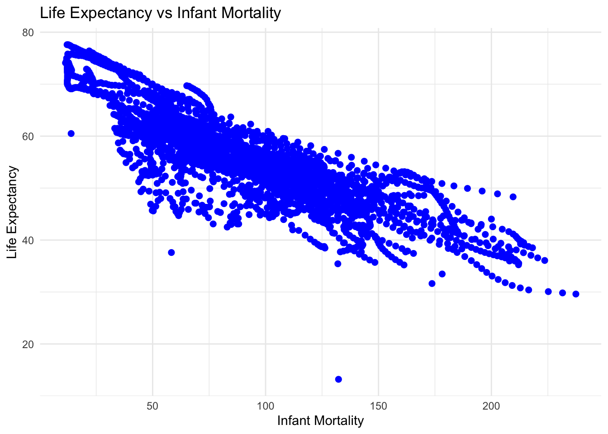
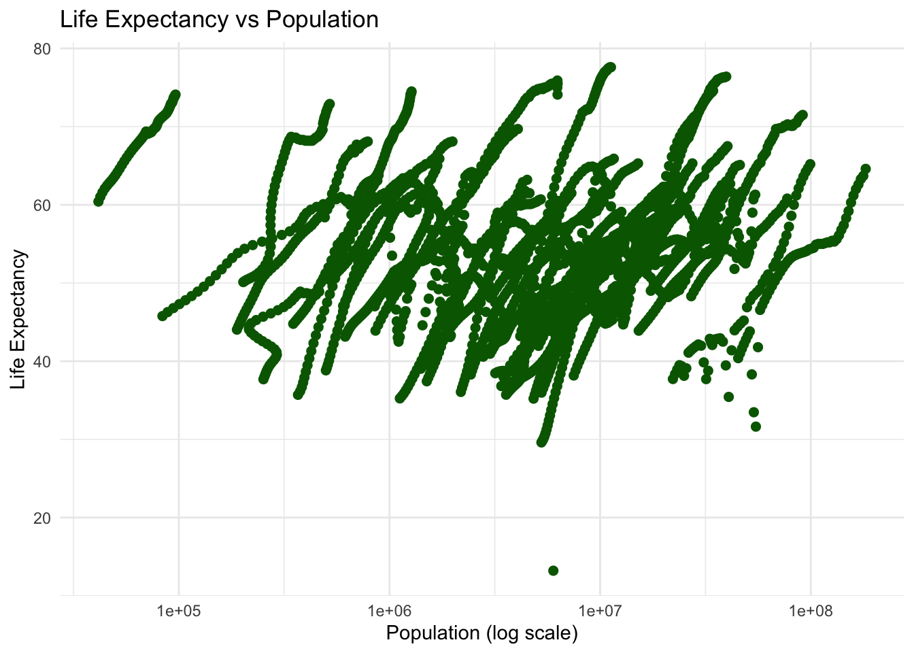
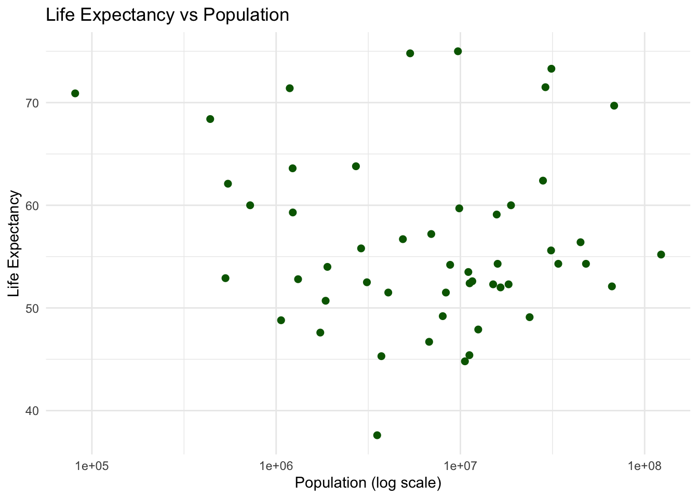
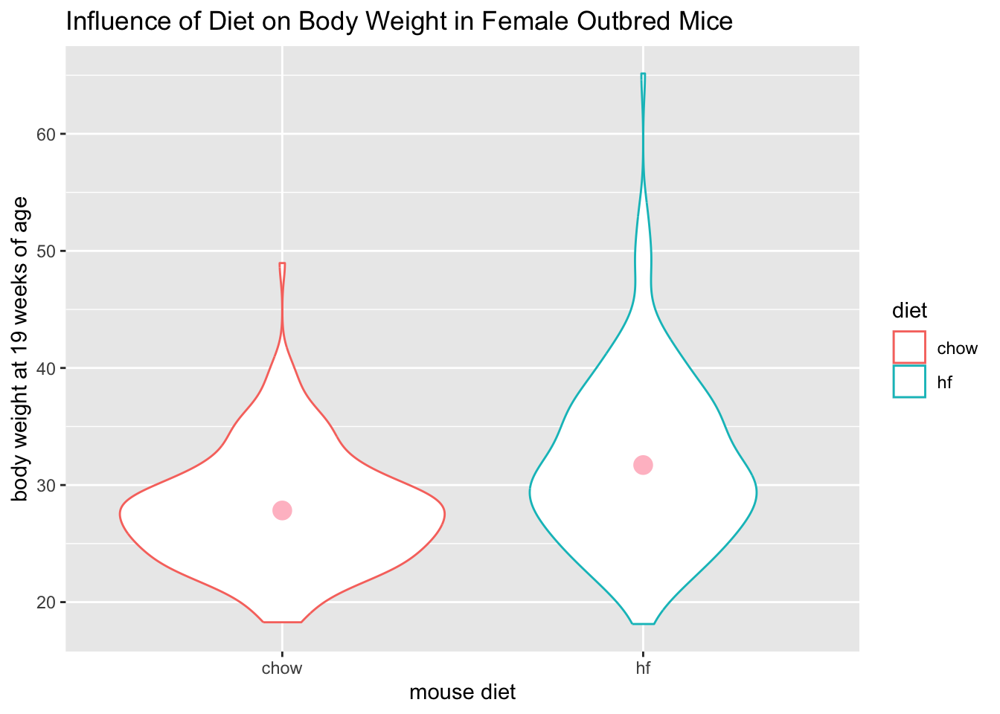
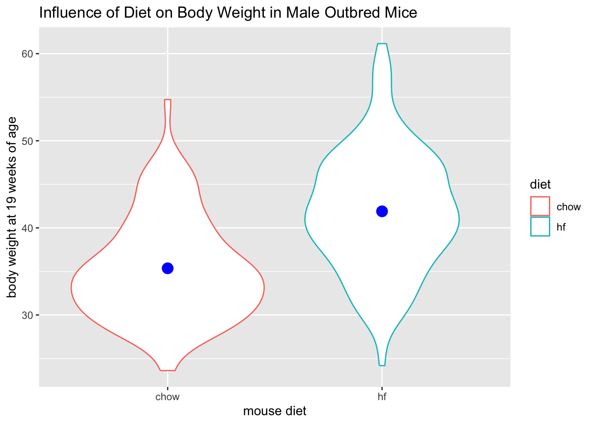
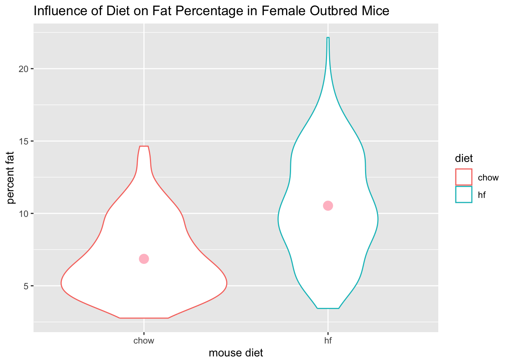
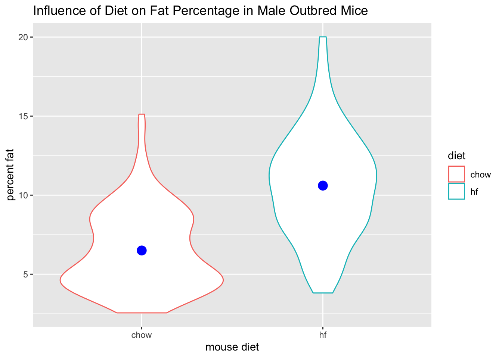

library("dslabs")Warning: package 'dslabs' was built under R version 4.4.3library("dslabs")Warning: package 'dslabs' was built under R version 4.4.3str(gapminder)'data.frame': 10545 obs. of 9 variables:
$ country : Factor w/ 185 levels "Albania","Algeria",..: 1 2 3 4 5 6 7 8 9 10 ...
$ year : int 1960 1960 1960 1960 1960 1960 1960 1960 1960 1960 ...
$ infant_mortality: num 115.4 148.2 208 NA 59.9 ...
$ life_expectancy : num 62.9 47.5 36 63 65.4 ...
$ fertility : num 6.19 7.65 7.32 4.43 3.11 4.55 4.82 3.45 2.7 5.57 ...
$ population : num 1636054 11124892 5270844 54681 20619075 ...
$ gdp : num NA 1.38e+10 NA NA 1.08e+11 ...
$ continent : Factor w/ 5 levels "Africa","Americas",..: 4 1 1 2 2 3 2 5 4 3 ...
$ region : Factor w/ 22 levels "Australia and New Zealand",..: 19 11 10 2 15 21 2 1 22 21 ...#Summary of data
summary(gapminder) country year infant_mortality life_expectancy
Albania : 57 Min. :1960 Min. : 1.50 Min. :13.20
Algeria : 57 1st Qu.:1974 1st Qu.: 16.00 1st Qu.:57.50
Angola : 57 Median :1988 Median : 41.50 Median :67.54
Antigua and Barbuda: 57 Mean :1988 Mean : 55.31 Mean :64.81
Argentina : 57 3rd Qu.:2002 3rd Qu.: 85.10 3rd Qu.:73.00
Armenia : 57 Max. :2016 Max. :276.90 Max. :83.90
(Other) :10203 NA's :1453
fertility population gdp continent
Min. :0.840 Min. :3.124e+04 Min. :4.040e+07 Africa :2907
1st Qu.:2.200 1st Qu.:1.333e+06 1st Qu.:1.846e+09 Americas:2052
Median :3.750 Median :5.009e+06 Median :7.794e+09 Asia :2679
Mean :4.084 Mean :2.701e+07 Mean :1.480e+11 Europe :2223
3rd Qu.:6.000 3rd Qu.:1.523e+07 3rd Qu.:5.540e+10 Oceania : 684
Max. :9.220 Max. :1.376e+09 Max. :1.174e+13
NA's :187 NA's :185 NA's :2972
region
Western Asia :1026
Eastern Africa : 912
Western Africa : 912
Caribbean : 741
South America : 684
Southern Europe: 684
(Other) :5586 # determine the type of object gapminder is
class(gapminder)[1] "data.frame"Install tidyverse in R console. Not directly into Quarto.
library (dplyr)
Attaching package: 'dplyr'The following objects are masked from 'package:stats':
filter, lagThe following objects are masked from 'package:base':
intersect, setdiff, setequal, unionafricadata <- gapminder %>%
filter(continent == "Africa")# look at data
str(africadata)'data.frame': 2907 obs. of 9 variables:
$ country : Factor w/ 185 levels "Albania","Algeria",..: 2 3 18 22 26 27 29 31 32 33 ...
$ year : int 1960 1960 1960 1960 1960 1960 1960 1960 1960 1960 ...
$ infant_mortality: num 148 208 187 116 161 ...
$ life_expectancy : num 47.5 36 38.3 50.3 35.2 ...
$ fertility : num 7.65 7.32 6.28 6.62 6.29 6.95 5.65 6.89 5.84 6.25 ...
$ population : num 11124892 5270844 2431620 524029 4829291 ...
$ gdp : num 1.38e+10 NA 6.22e+08 1.24e+08 5.97e+08 ...
$ continent : Factor w/ 5 levels "Africa","Americas",..: 1 1 1 1 1 1 1 1 1 1 ...
$ region : Factor w/ 22 levels "Australia and New Zealand",..: 11 10 20 17 20 5 10 20 10 10 ...#Summary of data
summary(africadata) country year infant_mortality life_expectancy
Algeria : 57 Min. :1960 Min. : 11.40 Min. :13.20
Angola : 57 1st Qu.:1974 1st Qu.: 62.20 1st Qu.:48.23
Benin : 57 Median :1988 Median : 93.40 Median :53.98
Botswana : 57 Mean :1988 Mean : 95.12 Mean :54.38
Burkina Faso: 57 3rd Qu.:2002 3rd Qu.:124.70 3rd Qu.:60.10
Burundi : 57 Max. :2016 Max. :237.40 Max. :77.60
(Other) :2565 NA's :226
fertility population gdp continent
Min. :1.500 Min. : 41538 Min. :4.659e+07 Africa :2907
1st Qu.:5.160 1st Qu.: 1605232 1st Qu.:8.373e+08 Americas: 0
Median :6.160 Median : 5570982 Median :2.448e+09 Asia : 0
Mean :5.851 Mean : 12235961 Mean :9.346e+09 Europe : 0
3rd Qu.:6.860 3rd Qu.: 13888152 3rd Qu.:6.552e+09 Oceania : 0
Max. :8.450 Max. :182201962 Max. :1.935e+11
NA's :51 NA's :51 NA's :637
region
Eastern Africa :912
Western Africa :912
Middle Africa :456
Northern Africa :342
Southern Africa :285
Australia and New Zealand: 0
(Other) : 0 # Only infant_mortality and life_expectancy
Africa_infant_life <- africadata %>% select(infant_mortality, life_expectancy)
# Only population and life_expectancy
Africa_pop_life <- africadata %>% select(population, life_expectancy)# look at data
str(Africa_infant_life)'data.frame': 2907 obs. of 2 variables:
$ infant_mortality: num 148 208 187 116 161 ...
$ life_expectancy : num 47.5 36 38.3 50.3 35.2 ...str(Africa_pop_life)'data.frame': 2907 obs. of 2 variables:
$ population : num 11124892 5270844 2431620 524029 4829291 ...
$ life_expectancy: num 47.5 36 38.3 50.3 35.2 ...#Summary of data
summary(Africa_infant_life) infant_mortality life_expectancy
Min. : 11.40 Min. :13.20
1st Qu.: 62.20 1st Qu.:48.23
Median : 93.40 Median :53.98
Mean : 95.12 Mean :54.38
3rd Qu.:124.70 3rd Qu.:60.10
Max. :237.40 Max. :77.60
NA's :226 #Summary of data
summary(Africa_pop_life) population life_expectancy
Min. : 41538 Min. :13.20
1st Qu.: 1605232 1st Qu.:48.23
Median : 5570982 Median :53.98
Mean : 12235961 Mean :54.38
3rd Qu.: 13888152 3rd Qu.:60.10
Max. :182201962 Max. :77.60
NA's :51 library (ggplot2)Warning: package 'ggplot2' was built under R version 4.4.3ggplot(Africa_infant_life, aes(x = infant_mortality, y = life_expectancy)) +
geom_point(color = "blue", size = 2) +
labs(
x = "Infant Mortality",
y = "Life Expectancy",
title = "Life Expectancy vs Infant Mortality"
) +
theme_minimal()Warning: Removed 226 rows containing missing values or values outside the scale range
(`geom_point()`).
ggplot(Africa_pop_life, aes(x = population, y = life_expectancy)) +
geom_point(color = "darkgreen", size = 2) +
scale_x_log10() + # log-scale for x-axis
labs(
x = "Population (log scale)",
y = "Life Expectancy",
title = "Life Expectancy vs Population"
) +
theme_minimal()Warning: Removed 51 rows containing missing values or values outside the scale range
(`geom_point()`).
Africainfant_missing_years <- africadata %>%
filter(is.na(infant_mortality)) %>% # keep rows with missing infant_mortality
distinct(year) %>% # get unique years
arrange(year) #sort the years
Africainfant_missing_years year
1 1960
2 1961
3 1962
4 1963
5 1964
6 1965
7 1966
8 1967
9 1968
10 1969
11 1970
12 1971
13 1972
14 1973
15 1974
16 1975
17 1976
18 1977
19 1978
20 1979
21 1980
22 1981
23 2016africa_2000 <- africadata %>%
filter(year == 2000)str(africa_2000)'data.frame': 51 obs. of 9 variables:
$ country : Factor w/ 185 levels "Albania","Algeria",..: 2 3 18 22 26 27 29 31 32 33 ...
$ year : int 2000 2000 2000 2000 2000 2000 2000 2000 2000 2000 ...
$ infant_mortality: num 33.9 128.3 89.3 52.4 96.2 ...
$ life_expectancy : num 73.3 52.3 57.2 47.6 52.6 46.7 54.3 68.4 45.3 51.5 ...
$ fertility : num 2.51 6.84 5.98 3.41 6.59 7.06 5.62 3.7 5.45 7.35 ...
$ population : num 31183658 15058638 6949366 1736579 11607944 ...
$ gdp : num 5.48e+10 9.13e+09 2.25e+09 5.63e+09 2.61e+09 ...
$ continent : Factor w/ 5 levels "Africa","Americas",..: 1 1 1 1 1 1 1 1 1 1 ...
$ region : Factor w/ 22 levels "Australia and New Zealand",..: 11 10 20 17 20 5 10 20 10 10 ...summary(africa_2000) country year infant_mortality life_expectancy
Algeria : 1 Min. :2000 Min. : 12.30 Min. :37.60
Angola : 1 1st Qu.:2000 1st Qu.: 60.80 1st Qu.:51.75
Benin : 1 Median :2000 Median : 80.30 Median :54.30
Botswana : 1 Mean :2000 Mean : 78.93 Mean :56.36
Burkina Faso: 1 3rd Qu.:2000 3rd Qu.:103.30 3rd Qu.:60.00
Burundi : 1 Max. :2000 Max. :143.30 Max. :75.00
(Other) :45
fertility population gdp continent
Min. :1.990 Min. : 81154 Min. :2.019e+08 Africa :51
1st Qu.:4.150 1st Qu.: 2304687 1st Qu.:1.274e+09 Americas: 0
Median :5.550 Median : 8799165 Median :3.238e+09 Asia : 0
Mean :5.156 Mean : 15659800 Mean :1.155e+10 Europe : 0
3rd Qu.:5.960 3rd Qu.: 17391242 3rd Qu.:8.654e+09 Oceania : 0
Max. :7.730 Max. :122876723 Max. :1.329e+11
region
Eastern Africa :16
Western Africa :16
Middle Africa : 8
Northern Africa : 6
Southern Africa : 5
Australia and New Zealand: 0
(Other) : 0 ggplot(africa_2000, aes(x = population, y = life_expectancy)) +
geom_point(color = "darkgreen", size = 2) +
scale_x_log10() + # log-scale for x-axis
labs(
x = "Population (log scale)",
y = "Life Expectancy",
title = "Life Expectancy vs Population"
) +
theme_minimal()
ggplot(africa_2000, aes(x = infant_mortality, y = life_expectancy)) +
geom_point(color = "blue", size = 2) +
labs(
x = "Infant Mortality",
y = "Life Expectancy",
title = "Life Expectancy vs Infant Mortality"
) +
theme_minimal()
# Fit a linear model: life_expectancy ~ infant_mortality
fit1 <- lm(life_expectancy ~ infant_mortality, data = africa_2000)
# Print a summary of the model
summary(fit1)
Call:
lm(formula = life_expectancy ~ infant_mortality, data = africa_2000)
Residuals:
Min 1Q Median 3Q Max
-22.6651 -3.7087 0.9914 4.0408 8.6817
Coefficients:
Estimate Std. Error t value Pr(>|t|)
(Intercept) 71.29331 2.42611 29.386 < 2e-16 ***
infant_mortality -0.18916 0.02869 -6.594 2.83e-08 ***
---
Signif. codes: 0 '***' 0.001 '**' 0.01 '*' 0.05 '.' 0.1 ' ' 1
Residual standard error: 6.221 on 49 degrees of freedom
Multiple R-squared: 0.4701, Adjusted R-squared: 0.4593
F-statistic: 43.48 on 1 and 49 DF, p-value: 2.826e-08# Fit a linear model: life_expectancy ~ population
fit2 <- lm(life_expectancy ~ population, data = africa_2000)
# Print a summary of the model
summary(fit2)
Call:
lm(formula = life_expectancy ~ population, data = africa_2000)
Residuals:
Min 1Q Median 3Q Max
-18.429 -4.602 -2.568 3.800 18.802
Coefficients:
Estimate Std. Error t value Pr(>|t|)
(Intercept) 5.593e+01 1.468e+00 38.097 <2e-16 ***
population 2.756e-08 5.459e-08 0.505 0.616
---
Signif. codes: 0 '***' 0.001 '**' 0.01 '*' 0.05 '.' 0.1 ' ' 1
Residual standard error: 8.524 on 49 degrees of freedom
Multiple R-squared: 0.005176, Adjusted R-squared: -0.01513
F-statistic: 0.2549 on 1 and 49 DF, p-value: 0.6159#Install and download dslabs package
#install.packages("dslabs")
library("dslabs")
#See overview of mouse weights data
str(mice_weights)'data.frame': 780 obs. of 7 variables:
$ body_weight : num 27.6 23 28.7 32.6 28.6 ...
$ bone_density: num 0.616 0.769 0.684 0.644 0.53 ...
$ percent_fat : num 7.26 4.95 6.02 9.54 6.99 ...
$ sex : Factor w/ 2 levels "F","M": 1 1 1 1 1 1 1 1 1 1 ...
$ diet : Factor w/ 2 levels "chow","hf": 1 1 1 1 1 1 1 1 1 1 ...
$ gen : Factor w/ 5 levels "4","7","8","9",..: 1 1 1 1 1 1 1 1 1 1 ...
$ litter : Factor w/ 2 levels "1","2": 1 1 1 1 1 1 1 1 1 1 ...#Get summary of the mouse weights data
summary(mice_weights) body_weight bone_density percent_fat sex diet gen
Min. :18.13 Min. :0.2708 Min. : 2.552 F:398 chow:394 4 : 97
1st Qu.:28.09 1st Qu.:0.4888 1st Qu.: 5.566 M:382 hf :386 7 :195
Median :32.98 Median :0.5643 Median : 8.276 8 :193
Mean :34.08 Mean :0.5697 Mean : 8.594 9 : 97
3rd Qu.:39.37 3rd Qu.:0.6373 3rd Qu.:10.926 11:198
Max. :65.15 Max. :0.9980 Max. :22.154
NA's :4 NA's :4
litter
1:442
2:338
#Install and load dplyr package
#install.packages("dplyr")
library("dplyr")
#Assign female mice to femalemice and then overview their data
femalemice = subset(mice_weights, sex == "F")
str(femalemice)'data.frame': 398 obs. of 7 variables:
$ body_weight : num 27.6 23 28.7 32.6 28.6 ...
$ bone_density: num 0.616 0.769 0.684 0.644 0.53 ...
$ percent_fat : num 7.26 4.95 6.02 9.54 6.99 ...
$ sex : Factor w/ 2 levels "F","M": 1 1 1 1 1 1 1 1 1 1 ...
$ diet : Factor w/ 2 levels "chow","hf": 1 1 1 1 1 1 1 1 1 1 ...
$ gen : Factor w/ 5 levels "4","7","8","9",..: 1 1 1 1 1 1 1 1 1 1 ...
$ litter : Factor w/ 2 levels "1","2": 1 1 1 1 1 1 1 1 1 1 ...summary(femalemice) body_weight bone_density percent_fat sex diet gen
Min. :18.13 Min. :0.2708 Min. : 2.766 F:398 chow:200 4 : 50
1st Qu.:25.35 1st Qu.:0.4531 1st Qu.: 5.690 M: 0 hf :198 7 : 98
Median :28.71 Median :0.5090 Median : 8.181 8 :100
Mean :29.76 Mean :0.5186 Mean : 8.683 9 : 50
3rd Qu.:33.21 3rd Qu.:0.5793 3rd Qu.:11.017 11:100
Max. :65.15 Max. :0.8519 Max. :22.154
NA's :1 NA's :1
litter
1:224
2:174
#Assign male mice to malemice and then overview their data
malemice = subset(mice_weights, sex == "M")
str(malemice)'data.frame': 382 obs. of 7 variables:
$ body_weight : num 47 31.1 37.2 27 36.1 ...
$ bone_density: num 0.842 0.611 0.673 0.578 0.727 ...
$ percent_fat : num 9.35 6.98 7.58 5.45 5.94 ...
$ sex : Factor w/ 2 levels "F","M": 2 2 2 2 2 2 2 2 2 2 ...
$ diet : Factor w/ 2 levels "chow","hf": 1 1 1 1 1 1 1 1 1 1 ...
$ gen : Factor w/ 5 levels "4","7","8","9",..: 1 1 1 1 1 1 1 1 1 1 ...
$ litter : Factor w/ 2 levels "1","2": 1 1 1 1 1 1 1 1 1 1 ...summary(malemice) body_weight bone_density percent_fat sex diet gen
Min. :23.62 Min. :0.3977 Min. : 2.552 F: 0 chow:194 4 :47
1st Qu.:32.97 1st Qu.:0.5553 1st Qu.: 5.407 M:382 hf :188 7 :97
Median :37.87 Median :0.6113 Median : 8.410 8 :93
Mean :38.58 Mean :0.6233 Mean : 8.502 9 :47
3rd Qu.:43.57 3rd Qu.:0.6799 3rd Qu.:10.814 11:98
Max. :61.15 Max. :0.9980 Max. :20.011
NA's :3 NA's :3
litter
1:218
2:164
#Select Diet and percent_fat for male and female subset groups
femaledietfat = select(femalemice, c('percent_fat', 'diet', 'body_weight'))
maledietfat = select(malemice, c('percent_fat', 'diet', 'body_weight'))
#See overview and summarize percent fat and diet for male versus female mice
str(femaledietfat)'data.frame': 398 obs. of 3 variables:
$ percent_fat: num 7.26 4.95 6.02 9.54 6.99 ...
$ diet : Factor w/ 2 levels "chow","hf": 1 1 1 1 1 1 1 1 1 1 ...
$ body_weight: num 27.6 23 28.7 32.6 28.6 ...summary(femaledietfat) percent_fat diet body_weight
Min. : 2.766 chow:200 Min. :18.13
1st Qu.: 5.690 hf :198 1st Qu.:25.35
Median : 8.181 Median :28.71
Mean : 8.683 Mean :29.76
3rd Qu.:11.017 3rd Qu.:33.21
Max. :22.154 Max. :65.15
NA's :1 str(maledietfat)'data.frame': 382 obs. of 3 variables:
$ percent_fat: num 9.35 6.98 7.58 5.45 5.94 ...
$ diet : Factor w/ 2 levels "chow","hf": 1 1 1 1 1 1 1 1 1 1 ...
$ body_weight: num 47 31.1 37.2 27 36.1 ...summary(maledietfat) percent_fat diet body_weight
Min. : 2.552 chow:194 Min. :23.62
1st Qu.: 5.407 hf :188 1st Qu.:32.97
Median : 8.410 Median :37.87
Mean : 8.502 Mean :38.58
3rd Qu.:10.814 3rd Qu.:43.57
Max. :20.011 Max. :61.15
NA's :3 #Make a plot comparing percent fat in the different diets for male or female mice
##Install ggplot2 to make plots
#install.packages("ggplot2")
library(ggplot2)
#Generate plot for female mice looking at diet influence on body weight
ggplot(data = femaledietfat, aes(x = diet, y = body_weight, color = diet)) + geom_violin() + stat_summary(fun.y=mean, geom="point", color="pink", size=4) + labs(title="Influence of Diet on Body Weight in Female Outbred Mice", x = "mouse diet", y = "body weight at 19 weeks of age")Warning: The `fun.y` argument of `stat_summary()` is deprecated as of ggplot2 3.3.0.
ℹ Please use the `fun` argument instead.
#Generate plot for male mice looking at diet influence on body weight
ggplot(data = maledietfat, aes(x = diet, y = body_weight, color = diet)) + geom_violin() + stat_summary(fun.y=mean, geom="point", color="blue", size=4) + labs(title="Influence of Diet on Body Weight in Male Outbred Mice", x = "mouse diet", y = "body weight at 19 weeks of age")
#Generate plot for female mice looking at diet influence on fat percent
ggplot(data = femaledietfat, aes(x = diet, y = percent_fat, color = diet)) + geom_violin() + stat_summary(fun.y=mean, geom="point", color="pink", size=4) + labs(title="Influence of Diet on Fat Percentage in Female Outbred Mice", x = "mouse diet", y = "percent fat")Warning: Removed 1 row containing non-finite outside the scale range
(`stat_ydensity()`).Warning: Removed 1 row containing non-finite outside the scale range
(`stat_summary()`).
#Generate plot for male mice looking at diet influence on fat percent
ggplot(data = maledietfat, aes(x = diet, y = percent_fat, color = diet)) + geom_violin() + stat_summary(fun.y=mean, geom="point", color="blue", size=4) + labs(title="Influence of Diet on Fat Percentage in Male Outbred Mice", x = "mouse diet", y = "percent fat")Warning: Removed 3 rows containing non-finite outside the scale range
(`stat_ydensity()`).Warning: Removed 3 rows containing non-finite outside the scale range
(`stat_summary()`).
#Fit a logistic model for diet as a predictor of body weight and fat percentage
##Convert rank to a factor for the numeric diet for female and male
femaledietfat$diet <- factor(femaledietfat$diet)
femaledietfat$diet <- as.numeric(femaledietfat$diet)
femaledietfat <- femaledietfat %>%
mutate(binarydiet = diet - 1)
maledietfat$diet <- factor(maledietfat$diet)
maledietfat$diet <- as.numeric(maledietfat$diet)
maledietfat <- maledietfat %>%
mutate(binarydiet = diet - 1)
##Fit the logistic regression model
mylogitfembody <- glm(binarydiet ~ body_weight, data=femaledietfat, family = "binomial")
summary(mylogitfembody)
Call:
glm(formula = binarydiet ~ body_weight, family = "binomial",
data = femaledietfat)
Coefficients:
Estimate Std. Error z value Pr(>|z|)
(Intercept) -3.38033 0.58641 -5.764 8.19e-09 ***
body_weight 0.11397 0.01968 5.792 6.95e-09 ***
---
Signif. codes: 0 '***' 0.001 '**' 0.01 '*' 0.05 '.' 0.1 ' ' 1
(Dispersion parameter for binomial family taken to be 1)
Null deviance: 551.74 on 397 degrees of freedom
Residual deviance: 511.07 on 396 degrees of freedom
AIC: 515.07
Number of Fisher Scoring iterations: 4mylogitfemfat <- glm(binarydiet ~ percent_fat, data=femaledietfat, family = "binomial")
summary(mylogitfemfat)
Call:
glm(formula = binarydiet ~ percent_fat, family = "binomial",
data = femaledietfat)
Coefficients:
Estimate Std. Error z value Pr(>|z|)
(Intercept) -2.98306 0.34784 -8.576 <2e-16 ***
percent_fat 0.34921 0.03969 8.797 <2e-16 ***
---
Signif. codes: 0 '***' 0.001 '**' 0.01 '*' 0.05 '.' 0.1 ' ' 1
(Dispersion parameter for binomial family taken to be 1)
Null deviance: 550.34 on 396 degrees of freedom
Residual deviance: 439.45 on 395 degrees of freedom
(1 observation deleted due to missingness)
AIC: 443.45
Number of Fisher Scoring iterations: 4mylogitmalebody <- glm(binarydiet ~ body_weight, data=maledietfat, family = "binomial")
summary(mylogitmalebody)
Call:
glm(formula = binarydiet ~ body_weight, family = "binomial",
data = maledietfat)
Coefficients:
Estimate Std. Error z value Pr(>|z|)
(Intercept) -6.08170 0.75017 -8.107 5.19e-16 ***
body_weight 0.15742 0.01939 8.118 4.75e-16 ***
---
Signif. codes: 0 '***' 0.001 '**' 0.01 '*' 0.05 '.' 0.1 ' ' 1
(Dispersion parameter for binomial family taken to be 1)
Null deviance: 529.47 on 381 degrees of freedom
Residual deviance: 441.38 on 380 degrees of freedom
AIC: 445.38
Number of Fisher Scoring iterations: 4mylogitmalefat <- glm(binarydiet ~ percent_fat, data=maledietfat, family = "binomial")
summary(mylogitmalefat)
Call:
glm(formula = binarydiet ~ percent_fat, family = "binomial",
data = maledietfat)
Coefficients:
Estimate Std. Error z value Pr(>|z|)
(Intercept) -3.88840 0.41779 -9.307 <2e-16 ***
percent_fat 0.45889 0.04831 9.498 <2e-16 ***
---
Signif. codes: 0 '***' 0.001 '**' 0.01 '*' 0.05 '.' 0.1 ' ' 1
(Dispersion parameter for binomial family taken to be 1)
Null deviance: 525.19 on 378 degrees of freedom
Residual deviance: 378.31 on 377 degrees of freedom
(3 observations deleted due to missingness)
AIC: 382.31
Number of Fisher Scoring iterations: 5#In summary, we found that diet appears to have an influence in both male and female mice, with a high fat diet leading to a higher body weight at 19 weeks of age and a higher fat percentage. We also found that body weight and fat percentage of the mice can be a predictor of the diet that the mice was on.